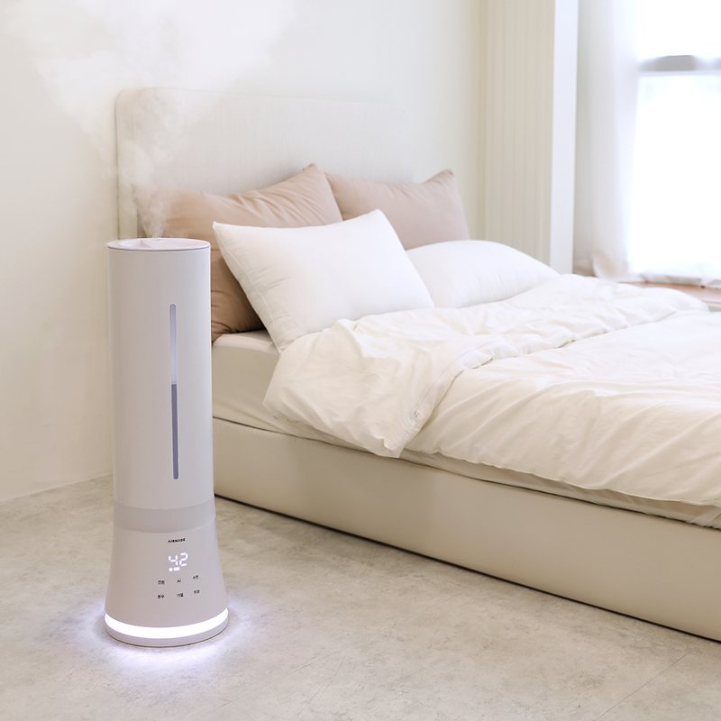
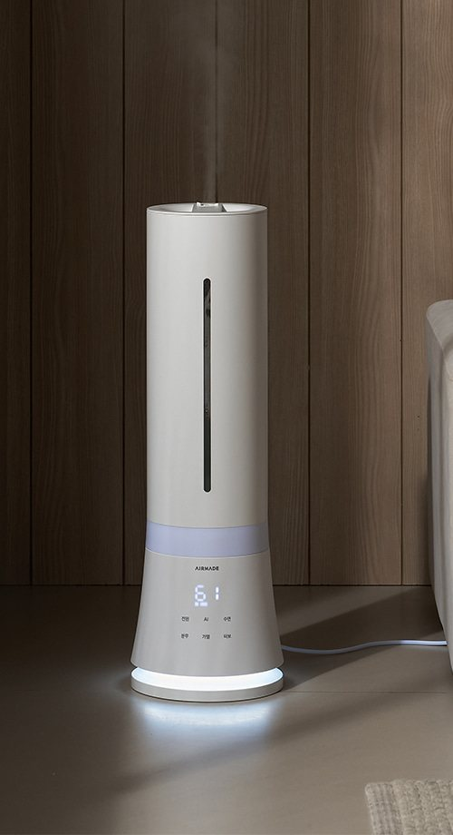
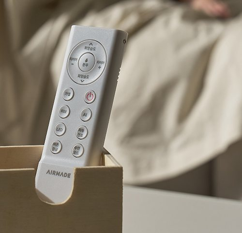
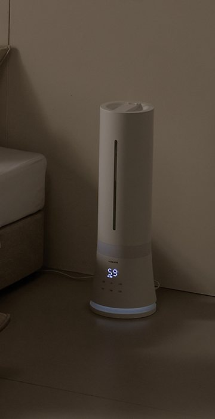

Airmade Aquamarine 9002 Humidifier Review at a Glance
This Airmade Aquamarine 9002 humidifier review covers one of the best-selling winter appliances in Korean apartments: the Airmade AMH-9002, a slim hybrid heated humidifier with a big 9-litre tank. Korean winters are dry — ondol floor heating makes it worse — so a humidifier running all night is normal in Korean homes from November.
Airmade sells it on two promises: warm, heat-assisted mist, and an automatic hot-air drying cycle that dries the inside for 90 minutes after you switch it off, so you are not leaving damp water sitting in the machine.

Design, Tank and Controls
It is a 210 × 210 × 680 mm white tower with a glowing light ring at the base, which doubles as a mood light. The 9.0 L tank is filled from the top, and on the AMH-9002 the tank is fixed to the body for stability — one of the upgrades over the older AMH-9000.
You get a touch panel with a humidity read-out, a remote control (its light sensor dims the display in a dark room), smartphone control, a timer, sleep mode, button lock and a rotating mist nozzle. Target humidity can be set between 45% and 95% in 5% steps, with three mist levels and an auto mode.


Heating, Turbo and the 90-Minute Drying Cycle
Hybrid humidifiers combine an ultrasonic plate with a heater. On the AMH-9002, the heating and turbo modes are separate settings; Airmade says turbo raises the temperature to about 55 °C for a warmer mist. That is also where the power draw jumps, from 20–35 W to 110–180 W.
- Automatic hot-air drying: runs for 90 minutes after use to dry the inside.
- Water-level sensor: cuts power when the tank is removed or overfilled.
- Dust filter: on the intake; tap it clean regularly.
- Detachable power cord for easier storage.
- No UV lamp — that is on the AMH-9902UV.


Key Specs
| Spec | Korean listing |
|---|---|
| Brand / model | Airmade (Korea) Aquamarine AMH-9002, released October 2024 |
| Type | Hybrid (ultrasonic + heating), top-fill |
| Tank | 9.0 L |
| Coverage | 60 m² (18 pyeong) |
| Max output | 580 cc/h |
| Continuous use | Up to 52 hours |
| Power | 220 V, 60 Hz; 20–35 W normal / 110–180 W heating & turbo |
| Humidity control | 45–95% in 5% steps, 3 mist levels, auto mode |
| Noise (min.) | 30 dB |
| Size | 210 × 210 × 680 mm |
| Made in | China (Airmade, Korea) |
| Warranty | 1 year (Korea) |
| U.S. Amazon | Korean 220 V model not confirmed — we link a similar-humidifier search |
Specs are as published on the official product notice, Airmade's FAQ and Korean price-comparison listings, and were not lab-measured by us.
How It Compares
| Airmade AMH-9002 (hybrid) | Airmade AMH-9902UV | Basic ultrasonic humidifier | |
|---|---|---|---|
| Mist | Cool or warm (to about 55 °C in turbo) | Cool or warm | Cool only |
| Hygiene extras | Heating, 90-min hot-air drying, dust filter | Adds UV sterilization | Usually none |
| Power | 20–35 W normal; up to 180 W heated | Up to 180 W | Low |
| Best if you want | Large tank, warm mist, low running cost in normal mode | UV on top | The cheapest option |
Pros & Cons
| Pros | Cons |
|---|---|
| 9.0 L tank, top-fill, up to 52 hours | Tall (680 mm) — not for low shelves |
| Automatic 90-minute hot-air drying | No UV sterilization on this model |
| Low 20–35 W in normal mode | Heated/turbo mode draws up to 180 W |
| App, remote with light sensor, 45–95% humidity control | Korean 220 V plug — not for U.S. outlets |
Who It Suits (and Who Should Skip It)
- Yes: Families in Korean apartments with dry ondol-heated rooms.
- Yes: Anyone who hates refilling small tanks every night.
- Yes: Nurseries and bedrooms where a dimmable display matters.
- No: Small studios where 9 litres is overkill.
- No: U.S. buyers — pick a 120 V hybrid humidifier instead.
Airmade AMH-9002 Humidifier FAQ
What is the Airmade Aquamarine AMH-9002?
It is a tall, hybrid (ultrasonic + heating) tower humidifier from the Korean brand Airmade, sold in Korea as a 'heat-sterilizing' humidifier. It released in October 2024 and has a 9.0 L top-fill tank, warm and turbo modes, and a 90-minute automatic hot-air drying cycle after use.
How big a room does it cover?
Korean spec listings give 60 m² (18 pyeong, roughly 650 sq ft) with a maximum output of 580 cc per hour and up to 52 hours of continuous use on a full tank at low settings.
How much power does it use?
The official product notice lists 220 V / 60 Hz, 20–35 W in normal (ultrasonic) mode and 110–180 W in heating or turbo mode. Airmade's FAQ says turbo mode warms the mist to about 55 °C.
Does it have UV sterilization?
No. UV is on the sister model AMH-9902UV. The AMH-9002 relies on its heating mode, a dust filter and the automatic hot-air drying cycle to keep the inside cleaner.
Can I use it in the U.S.?
It is a Korean 220 V appliance with a Korean plug, so it is not a plug-in option for 120 V homes. Our shop button opens a search for similar U.S.-voltage hybrid warm and cool mist tower humidifiers instead.
Hybrid Warm & Cool Mist Tower Humidifiers
The Korean 220 V Airmade AMH-9002 is not confirmed on U.S. Amazon, so here is a search for similar U.S.-voltage hybrid tower humidifiers.